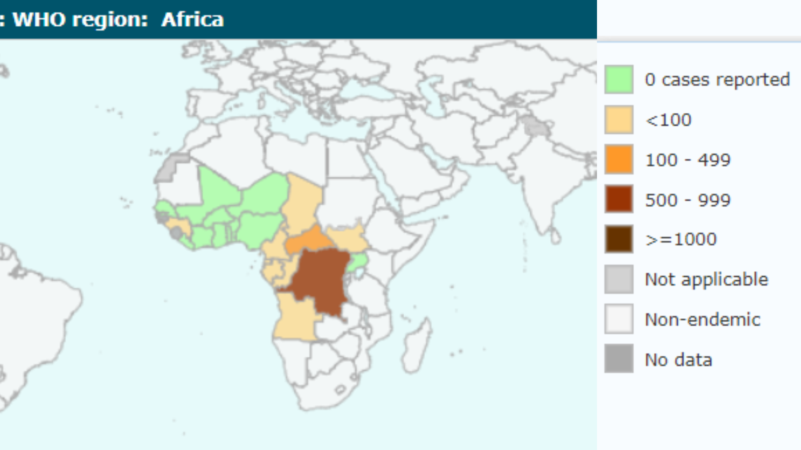

Where African Trypanosomiasis occurs?The persistence of African trypanosomiasis in sub-Saharan Africa remains a significant challenge for public health, impacting various societal, economic, and healthcare dimensions. Efforts to combat the disease are ongoing, with initiatives focusing on research, surveillance, and healthcare infrastructure investment. However, achieving control and elimination goals necessitates sustained commitment and resources (WHO, 2024). Furthermore, while African trypanosomiasis predominantly affects sub-Saharan Africa, isolated cases have been reported in regions outside this area, emphasizing the importance of global vigilance (WHO, 2024). Historical records indicate the first recorded case of African trypanosomiasis dates to the 14th century (Hopkins Medicine, 2024). Epidemics and outbreaks of the disease have occurred sporadically throughout history, contributing to significant morbidity and mortality in affected regions (CDC, 2024). Historical treatments for African trypanosomiasis include the use of various medications such as pentamidine, suramin, melarsoprol, and eflornithine (Hopkins Medicine, 2024). Each year, it is estimated that around 10,000 to 30,000 people are infected with African trypanosomiasis, and without proper treatment, the disease can be fatal, resulting in approximately 10,000 deaths annually (WHO, 2024). Therefore, improving vector management strategies, such as insecticide spraying and environmental modifications, is crucial for controlling the spread of the disease and reducing its burden (Maxfield and Bermudez, 2023). |

|